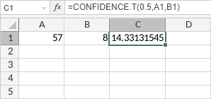

CONFIDENCE.T funkcija
Funkcija CONFIDENCE.T je jedna od statističkih funkcija. Koristi se za vraćanje intervala poverenja za srednju vrednost populacije, koristeći Studentovu t-distribuciju.
Sintaksa
CONFIDENCE.T(alpha, standard_dev, size)
Funkcija CONFIDENCE.T ima sledeće argumente:
| Argument | Opis |
|---|---|
| alpha | Nivo značajnosti koji se koristi za izračunavanje nivoa poverenja, numerička vrednost veća od 0, ali manja od 1. |
| standard_dev | Standardna devijacija populacije, numerička vrednost veća od 0. |
| size | Veličina uzorka, numerička vrednost veća ili jednaka 1. |
Napomene
Kako primeniti funkciju CONFIDENCE.T.
Primeri
Slika ispod prikazuje rezultat koji vraća funkcija CONFIDENCE.T.
